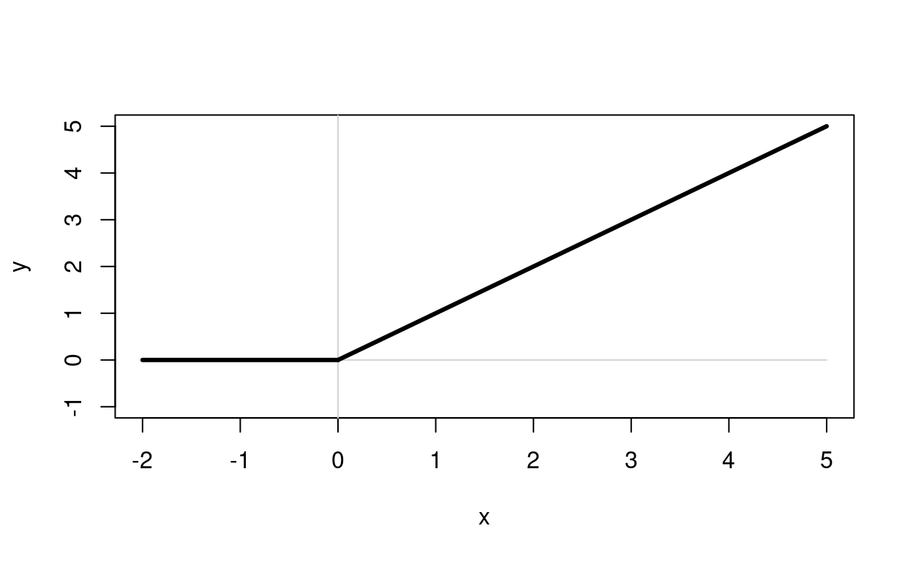
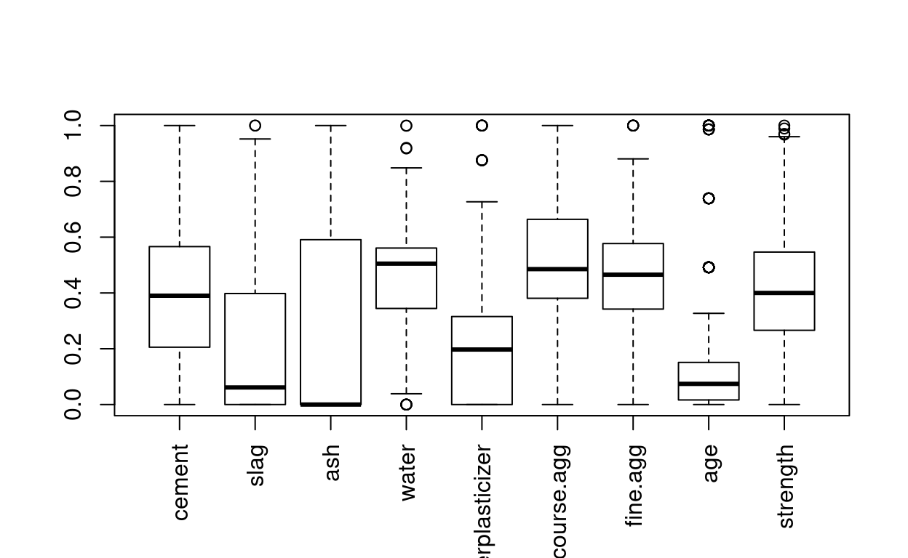

Neural Networks
This is an active and rapidly changing field of research. We will only cover a small portion of this vast field, but that will be enough to do some fun things.
We start with a weighted graph (please review the information on graphs in the mathematical background). The graph is directed and we will restrict ourselves to ones with no cycles. The graph is oriented horizontally and organized into layers which are a collection of nodes arranged vertically. The layers have a natural ordering, starting with the first, known as the input layer and culminating in the final output layer. Edges between vertices proceed from a vertex in one layer to a vertex in the next layer and, at least for now, there is no skipping of layers, nor backtracking, nor connections between nodes in the same layer. Layers in beteen the input and output layear are known as hidden layers.
A neural network with multiple hidden layers is a deep neural network. That’s where the term deep learning comes from. A sufficiently large neural network (in terms of nodes) with at least one hidden layer is a universal approximator Which means that it can approximate any function.
We associate values to each node and calculate these value in an iterative fashion based off the weights of the incoming edges and the values of their source nodes. This is true for all nodes except the layer one nodes (the input nodes) whose values come from outside the neural network.
The node value calculation is a two step process. For each node in a layer (other than the input layer) we examine the value of every immediate ancestor. The value of each ancestor is multiplied by the weight of the edge connecting the ancestor to the target node. The produces are added together and this value is, temporarily, the new node value.
Notice that this is, essentially, an inner product. THe ancestor nodes act as the input vector, and the weights of the connecting edges act as the other vector.
If we consider the subgraph comprised solely of layer \(i\) and layer \(i+1\) the weighted adjacency graph capatures all the weight information. The vector of \(n_i\) node values would correspond to the column vector that is input into the linear transformation encoded by the matrix and the resulting \(n_{i+1}\) length vector is the output.
Let’s denote the node values at layer \(i\) by \(V_i\). The adjacency matrix of weights would then be \(W_i\). The matrix \(W_i\) has dimensions \(n_i\) by \(n_{i+1}\). We calculate the values at layer \(V_{i+1}\) as: \(W_iv_i = v_{i+1}\).
If you think about it carefully, you might realize that if we stopped there the entire “layer idea” is unnecessary. We would multiply \(v_{i+1}\) by \(W_{i+1}\) to generate \(v_{i+1}\) But why go to that trouble?
\[ \begin{aligned} v_{i+1} &= W_{i+1}v_{i+1} \\ &= W_{i+1}W_iv_i \end{aligned} \]
But \(W_{i+1}W_i\) is the matrix product of two matrices… and it could be replaced with a single matrix. BUt we do Not do this. Instead we “tweak” the values of \(v_i\) before using them calculate \(v_{i+1}\).
Activation Functions
The tweaking utilizes what is called an activation function. There are many of them. Classic back propogation (explained below) uses calculus and so requires that the function be differentiable. Some R packages (such as neuralnet) require this restriction. Others do not.
One popular function is relu which stands for rectified linear.
The function returns a 0 for all negative values and then passes along the original value. The graph is quite boring:

A practical guide to relu from Medium magazine (online) is good for further reading.
So, we calculate \(v_{i+1} = W_iv_i\) using matrix mutliplication. And then replace any negative coordinate with 0.
This activation function has a few theoretical issues (it’s not differentiable everywhere for one), but the ease and speed of calculation makes up for it in many applications.
There is a differentiable version of relu called softplus:
\[ \textrm{softplus}(x) = \log(1+e^x) \]
The two “built-in” differentiable activation functions used by the package neuralnet are:
"logistic",- ’“tanh”`.
You may provide your own customized differentiable functions.
The logistic curve varies smoothly between 0 and 1:
While the tanh() function (the hyperbolic tangent) varies smoothly between -1 and 1:
Bias
One more trick/detail: Associated to individual nodes is a special value called a bias. This bias is added (which can result in subtraction if the bias is negative) to the node’s value before the activation function. It can be represented graphically be LONE nodes in the previous layer that always have a constant value of 1. This convention means that the bias arises from the weight of an edge (which will matter to us in just a second). Changing the bias is, effectively, changing the location of the threshold at which the relu function kicks in. (although that’s not quite fair since) the result is still positive values.
IN any event, the upshot of this procedure is that we are able to represent non-linear functions. Without the activation function, the output layer could be calculated in a single matrix multiplication from the input layers. Ergo, the only functions we could encode would all be linear.
However, the activation function makes things more interesting. First, if we focus our attention on ONE vertex in layer \(i+1\), then we are only considering the dot product of a single row with \(v_i\). So we are interested in solutions to \([w_j]^t \cdot v_i=0\) This always forms an \(n_i-1\) dimensional subspace and divides the space into two halves– those whose value is positive (and are passed on through the activation function) and those whose values are negative (and thus turned to 0).
In essence, the weights \(W_i\) associate to each node in layer \(i+1\) a half-space of node values in layer \(i\). If a weight is 0 we don’t normally think of there as being an edge– so we don’t need to deal with the pathological “all-zero” weight sitution.
Within the half-space the function is linear, outside the half-space the function is 0. By stacking such things together we begin to capture the functionality of if-then.
There are a large number of other activation functions which have different characteristics
Topology
The topology of a neural network is the layout of the graph. It is often summarized by describing
- The number of layers
- The number of ndoes in each layer
- Whether or not information can go backwards.
We have already seen that a network containing multiple hidden layers is called a deep neural network. Networks for which the only connections are from nodes in one layer to nodes in a higher valued layer are called feed forwaward.
Networks that allow loops (edges from a node to itself) are called recurrent (or feedback networks). Some of these loops come with a delay that act as a form of memory (that will make more sense after reading the next section).
In image processing it is common to use a convolutional neural network that has a few additional features. We will discuss that later
Training
Neural networks are a form of supervised learning. As with all supervised learning techniques there is a data set of interest for which the “answers” (whatever that happens to mean) are known. for example, the UCI Machine Learning repository has a commonly used data set produced by I-Cheng Yeh exploring the effects of various materials on the strength of High-Performance Concrete. The book Machine Learning in R by Brett Lantz (3rd edition) uses this as an example when they reproduce Yeh’s analysis from his 1998 paper*
The training process takes a data set like Yeh’s and for each row in the table the explanatory values in the row are provided to the input layer of the neural network. The output is then calculated using the process described in the last section. This is done for each row. After each calclulation, the output value is compared to the true value in the table and the weights are updated.
In feedforward networks the updating starts at the weights leading into the output layer and progress backwards to the input layers. The process most commonly employed is called back propogation.
Many people describe this complete process as a two phase procedure:
- forward phase: Input the values into the neural net and calcualte the ouput
- backwards phase: look at the error, and modify weights working from the output layer to the input layer
One iteration of this process is known as an epoch. Without prior knowledge (like a pre-trained neural network) the weights are randomly chosen.
You might remember those animations we played with back in the “Math Background” when we were looking at what it means to minimize the sum of squares for a line of best fit.
In some way you were manually performing a similar operation. It’s not quite the same, but, there was a target value (the peak) of the graph. The values of the parameters were incrementally modified and the new result was examined. This was repeated until the desired value was achieved (the peak was reached).
Back Propogation
Back Propogation is really related to the chain rule in calculus (for those that know what that means.) You might want to review the material in the “Math Background” referring to the chain rule.
In the forward stage the value of the output is generated for the current set of weights on the edges. The results in the ouptput layer (often one node) are then compared to the desired output.
The process starts with a data set that one wishes For a given neural network that is designed consistent with some training set
The input values are assigned to the input layer, the node values are calculated, and the output layer is examined.
I think the eigenvalues of the weight matrix will tell us something about shared subspaces. When we identify the eigen values of the weight matrix….. not quite….
Example
We are going to use the concrete example stored in the UCI Machine Learning repository produced by I-Cheng Yeh who was exploring the effects of various materials on the strength of High-Performance Concrete. The book Machine Learning in R by Brett Lantz (3rd edition) uses this as an example when they reproduce Yeh’s analysis from his 1998 paper*
(more formal citation: I-Cheng Yeh, “Modeling of strength of high performance concrete using artificial neural networks,” Cement and Concrete Research, Vol. 28, No. 12, pp. 1797-1808 (1998). ) First we need to download the data. I’ll use the terminal commandwget: Notice that once the file is downloaded there is no reason to do it again… so the folowing code block has eval=FALSE. Run it ONCE and then set eval=FALSE:
Now this is an excel file. So I will use the readxl package to import the data. The imported version is a tidyverse tibble. We will want more helpful colnames:
Normalizing (or standardizing)
Read the following article about normalizing data
The key takeaway here is that standardizing the variables is an important part of the process. Remember that neural networks are, when we use RELU as an activation function, piecewise linear. (for sufficiently large number of nodes the approximation is close enough to any non-linear function that it doesn’t matter… but the lesson still holds– standardize!)
The notation is a bit tricky here. In statistics I tend to use the term standardize for the process converting values to their \(z-scores\); I don’t want to confuse students with the term normalize because if the original population was already normal than normalizing is redundant. The term standardizing is a better fit because if the data is already normal, then end result is data from a standard normal distribution.
THe author of that link probably had similar experiences as my own. That said. My gut response is still just to call the process normalizing– whether it be
- subtracting the mean and dividing by the standard deviation, or
- subtracting the min and dividing by the range, or
- any other procedure for adjusting the input values to make them comparable.
If the data looks normalish (technical term) then I would use the first approach. In most other situations, without some compelling reason, I would use the second. However, there are many other types of normalization that arise in special circumstances. Two examples that I have seen in bioinformatics applications include
- Divide each variable by a scaling factor so that all variables have the same geometric mean
- Adjust values between variables so that they have the same empirical quantiles.
In summary, the goal is to transform all the explanatory variables in a data set so that the values are comparable and/or to improve the efficiency and accuracy of some stage in a modelling process.
For our concrete data we will use the min-max normalization technique which shifts and scales a variable to have values between 0 and 1:
normalize=function(var){
(var-min(var))/(max(var)-min(var))
}
concrete.normalized<-sapply(concrete,normalize)
concrete.normalized<-as.data.frame(concrete.normalized)Note: The function sapply produces a matrix rather than a data.frame. It doesn’t really influence us much one way or the other, but columns can not be accessed in matrices using the df$col notation so, for the purposes of consistency, I’m keeping the training and testing data sets as data frames.
We can check the results of our normalization with side-by-side boxplots:
boxplot(concrete.normalized,las=3)
Training and testing data
As usual, we need to set aside some data for training and some for testing. We will use one third of the rows for testing and 2/3rds for training:
Building the model
We will use the neuralnet package (so install that if necessary) which uses a function called neuralnet() to build the model. We will start (as was done in Brett Lantz’s Machine Learning in R book) with one hidden node and the logistic function as the activation function:
library(neuralnet)
simple.model<-neuralnet(data=concrete.training,strength~.,hidden=1,act.fct = "logistic")## Warning: package 'neuralnet' was built under R version 3.6.1
SimpleModel
Notice the biases.
If we let lg stand for the logistic function \(\frac{1}{1+e^{-x}}\) then our model, rounded to 1 decimal place, is:
\[ \textrm{strength}=0.7-0.7 \lg(2.4 -3.9\ \textrm{cement}-2.3\ \textrm{slag}+(\cdots) -10.5\ \textrm{age}) \]
Notice that the activation function is NOT applied to the final node in this package. Let’s test our understanding. We will extract the first level of weights from the model:
first.weights<-simple.model$weights[[1]][[1]][,1]This includes the bias, so we will extract the explanatory values from the first training case and prepend the vector with a 1 (to represent the intercept/bias term):
input<-unlist(c(1,concrete.training[1,-9]))Notice that the -9 is used to remove the value for strength.
Now let’s computer “by hand” and then using the predict() function. Rather than using an R expression– I will hande-code the last two values to make the formula a little more intuitive:
logistic=function(x){1/(1+exp(-x))}
0.6684915-0.7414956*logistic(sum(input*first.weights))## [1] 0.1613026predict(simple.model,concrete.training[1,])## [,1]
## 415 0.1613026Success! They match. So we do understand the calculation procedure.
Testing the model
Let’s produce all the computed and predicted values for the testing set and calculate the sum of squares errors:
observed=concrete.testing$strength
predicted=predict(simple.model,concrete.testing)
sum((observed-predicted)^2)## [1] 9.921401plot(predicted,observed,main="Comparison of predicted and observed concrete strengths",sub="1 hidden node",xlim=c(0,1))Notice that the predicted values all stop around 0.7.
Let’s make a residual plot:
fitted=predicted
residual=observed-fitted
plot(fitted,residual,main="Residual Plot of simple model")Classic heteroscedasticity. Luckily for us we are not doing a linear regression. However, the cautionary tail remains… the variance is much higher as the predicted values (aka fitted) values approach 70 percent of the maximum strength, and we are not going to be able to do a good job of predicting strengths near the maximum.
Exercise
Produce a model with 5 hidden nodes: and generate residual plot and sum of squares of the residuals. Call it better.model:
# better.model<-neuralnet(data=concrete.training,strength~.,hidden=5,act.fct = "logistic")
# plot(better.model)
# observed=concrete.testing$strength
# fitted=compute(better.model,concrete.testing)$net.result[,1]
# plot(fitted,observed,main="Comparison of predicted and observed concrete strengths",sub="5 hidden node",xlim=c(0,1))
# residuals=observed-fitted
# plot(fitted,residuals)
# sum(residuals^2)Taking it to the next level
In order to improve our model we will make two changes. First, we will use the softplus() activation function (see earlier for review). And second we will use two hidden layers:
softplus=function(x){log(1+exp(x))}
even.better.model<-neuralnet(data=concrete.training,strength~.,hidden=c(5,5),act.fct = "logistic")
even.better.model2<-neuralnet(data=concrete.training,strength~.,hidden=c(5,5),act.fct = softplus)
plot(even.better.model)
plot(even.better.model2)## [1] 4.500299## [1] 4.34877The softplus function did a bit better than the logistic. It’s worth comparing the predicted values generated by the two of them:
We notice that softplus had a few negative values for strength (which are, of course, nonsensical), however the fit was improved by using softplus()